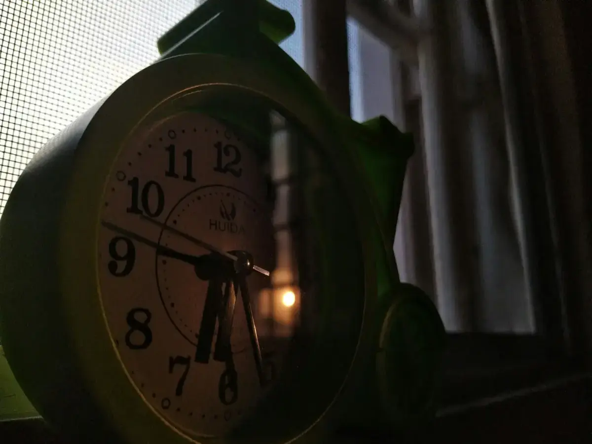

Why Do I Wake Up at 3 AM? The Science of Sleep Disruption

If you find yourself constantly asking "why do i wake up at 3am?", you are not alone. Waking up at 3am alert and unable to return to rest is one of the most common—and frustrating—forms of sleep maintenance insomnia. It isn't random, and it isn't just "stress." Discover the precise physiological roadblocks behind irregular sleep patterns and how to reset your internal clock tonight.
1. Cortisol Spikes and Waking Up at 3am Alert
Many people experience sudden 3am awakenings heart racing, leading them to falsely conclude they are suffering from panic attacks or generalized anxiety. While stress plays a role, the biological mechanism behind waking up at 3am alert is driven by hormones, specifically cortisol.
According to research published by the NIH, cortisol should naturally dip to its lowest point around midnight and begin a slow, gradual climb toward morning. However, when metabolic stress, late-night alcohol consumption, or an erratic sleep schedule misaligns this curve, your body prematurely triggers a cortisol spike. Experts at the Mayo Clinic point out that this premature hormone release is a survival mechanism—your brain is falsely interpreting a physiological fluctuation as an emergency. In other words, those sudden 3am awakenings heart racing are usually your stress axis misfiring, not a sign of a heart problem.
2. Thermal Failure: The Ideal Bedroom Temperature for Deep Sleep
Your body's ability to stay asleep is heavily dependent on thermoregulation. The work of Dr. Charles Czeisler and the published Harvard Medical School sleep studies demonstrates that core body temperature must drop to initiate and maintain sleep.
So, what is the ideal bedroom temperature for deep sleep? It's much cooler than most people realize—usually between 60 to 67 degrees Fahrenheit. Around 3 AM, your body shifts from slow-wave deep sleep to lighter REM sleep. If your room is too warm, your core body temperature cannot maintain its necessary dip. This thermal failure signals to your brain that it is time to wake up, shattering your sleep architecture.
3. The Melatonin Trap: Why Does Melatonin Make Me Groggy?
Desperate for uninterrupted rest, millions turn to supplements. Yet, they wake up exhausted, searching online for "why does melatonin make me groggy?"
The National Sleep Foundation and the American Academy of Sleep Medicine frequently address this. Melatonin is a circadian rhythm regulator, not a traditional sedative. When you take excessive synthetic doses (often 10x to 50x what your brain naturally produces) at inconsistent times, you induce severe melatonin hangover symptoms. The residual hormone remains in your bloodstream well into the next day, dragging down your energy levels and confusing your brain's natural night-day cycle.
4. Best Natural Sleep Aids for Middle of the Night Waking
If chemical sedatives leave you foggy, you are not alone in searching for natural alternatives to synthetic melatonin. Instead of forcing sedation, the goal is to support the systems that keep you asleep—stable nighttime cortisol, a cool core temperature, and steady overnight blood sugar. That is why many readers look for a non groggy over the counter sleep aid rather than another high-dose melatonin pill.
Two evidence-informed ingredients come up repeatedly when people research the best natural sleep aids for middle of the night waking. Magnesium glycinate for insomnia sleep support is studied for its role in calming the nervous system, while botanicals such as glycine, L-theanine, and tart cherry are popular among people who want to buy non habit forming sleep supplements instead of prescription sedatives. Some readers specifically seek the best cortisol blocker supplements for sleep to blunt that pre-dawn hormone surge. Always confirm any supplement with your physician first.
Disclosure: the assessment below may recommend affiliate products. This is educational content, not medical advice. If you prefer a gentle format like herbal liquid sleep drops for adults and you are still wondering how to fall back asleep at 3 am tonight, the fastest first step is to pinpoint your personal trigger.
5. The Invisible Metabolic Clock
Your brain isn't the only organ keeping time. You have peripheral clocks in your digestive system and liver. As noted in the Journal of Clinical Sleep Medicine, late-night eating forces your metabolic clock out of sync with your neurological clock.
Digesting food generates heat and triggers insulin release. If you eat a heavy meal too close to bedtime, the resulting blood sugar crash in the middle of the night acts as a physiological alarm clock, directly contributing to 3 AM awakenings. So when you ask why do i wake up at 3am after a late dinner, your metabolism is often the hidden culprit.
6. How to Fall Back Asleep at 3 AM: Light Exposure and Circadian Desynchronization
Our sleep-wake cycles are anchored by light. Research spearheaded by Nobel Laureate Dr. Michael W. Young and supported by the National Institute of General Medical Sciences illustrates how light photons hit the retina and travel directly to the Suprachiasmatic Nucleus (the brain's master clock).
Blue light from screens suppresses your natural melatonin onset. Without clear light-dark boundaries, your circadian rhythm flattens. To fix this, Dr. Matthew Walker at the UC Berkeley Center for Human Sleep Science advises strict light management. If you want to know how to lower core body temperature before bed, combine dim evening lighting with a warm bath—the vasodilation pulls heat away from your core. And if you are wondering how to fall back asleep at 3 am, the golden rule applies: leave the bed, keep the lights extremely dim, and wait until true sleepiness returns.
Frequently Asked Questions
Why do i wake up at 3am?
Waking up at 3 AM is typically caused by natural shifts in your sleep architecture as you move from deep slow-wave sleep into lighter REM stages. During this time, your body becomes highly sensitive to thermal fluctuations, blood sugar drops, or elevated cortisol, pulling you out of sleep.
What is the ideal bedroom temperature for deep sleep?
The ideal bedroom temperature for deep sleep is between 60°F and 67°F (15.6°C to 19.4°C). This cool environment supports your body's natural thermal drop, which is a biological requirement to maintain unbroken, restorative sleep.
Why does melatonin make me groggy?
Melatonin makes you groggy when taken in synthetic doses that are far higher than what your brain naturally produces. Taking it too late at night shifts your circadian clock, leading to a "melatonin hangover" where the hormone is still active in your system the next morning.
How to fall back asleep at 3 am?
To fall back asleep at 3 AM, leave your bed if you aren't asleep within 20 minutes. Keep the lights dim, read a physical book, and avoid screens or checking the clock. Return to bed only when you feel heavy-eyed to prevent your brain from associating the bed with wakefulness.
How to lower core body temperature before bed?
To lower your core body temperature before bed, take a warm shower 60 to 90 minutes before sleeping. The warm water dilates blood vessels on your skin, allowing your body to rapidly dump core heat once you step into a cool room.
Mark D. — Sleep Habits Researcher & Circadian Optimizer
Creator of @marksleepreview
Mark reviews sleep routines and summarizes research for readers. He tests sleep routines and summarizes publicly available research for readers.